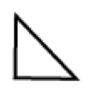
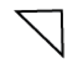
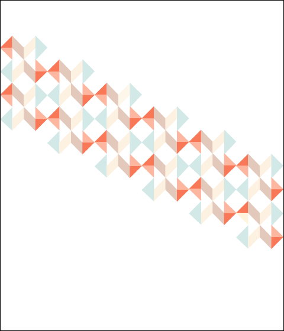
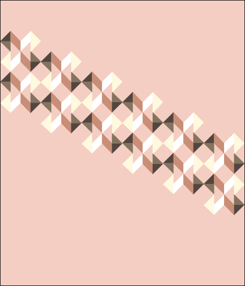
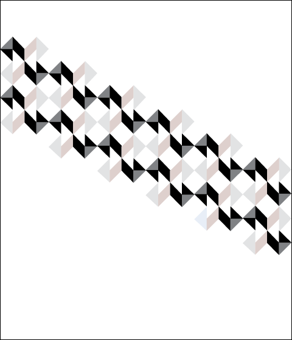

Instructions:
Shapes to be used: (No stroke, only fill)
A: B:  C: D 
1. Open Adobe Illustrator
2. Create a new 6 x 7in document with the orientation as portrait
3. Go to preferences, grids & guides and set gridline to every 1in with four subdivisions
4. Go to the view menu and select show grid
5. Using the pen tool, draw shape A in column 1, row 4
6. Fill this shape with a chosen color W
7. Draw shape D in column 1, row 5 and fill with a chosen color X
8. Draw shape A in column 1, row 6 and fill with a chosen color Y
9. Draw shape D in column 1, row 7 and fill with color Y
10. Draw shape A in column 1, row 8 and fill with color W
11. Draw shape D in column 1, row 9 and fill with color X
12. Draw shape A in column 1, row 10 and fill with color Y
13. Draw shape D in column 1, row 11 and fill with color Y
14. Draw shape B in column 2, row 4 and fill with a chosen color Z
15. Draw shape D in column 2, row 5 and fill with color Z
16. Draw shape A in column 2, row 6 and fill with a chosen color V
17. Draw Shape C in column 2, row 7 and fill with color V
18. Draw shape B in column 2, row 8 and fill with color Z
19. Draw shape D in column 2, row 9 and fill with color Z
20. Draw shape A in column 2, row 10 and fill with a color V
21. Draw Shape C in column 2, row 11 and fill with color V
22. Draw shape A in column 3, row 4 and fill with a color V
23. Draw Shape C in column 3, row 5 and fill with color V
24. Draw shape B in column 3, row 6 and fill with color Z
25. Draw shape D in column 3, row 7 and fill with color Z
26. Draw shape A in column 3, row 8 and fill with a color V
27. Draw Shape C in column 3, row 9 and fill with color V
28. Draw shape B in column 3, row 10 and fill with color Z
29. Draw shape D in column 3, row 11 and fill with color Z
30. Draw shape B in column 4, row 4 and fill with color Y
31. Draw shape C in column 4, row 5 and fill with color Y
32. Draw shape B in column 4, row 6 and fill with color X
33. Draw shape C in column 4, row 7 and fill with color W
34. Draw shape B in column 4, row 8 and fill with color Y
35. Draw shape C in column 4, row 9 and fill with color Y
36. Draw shape B in column 4, row 10 and fill with color X
37. Draw shape C in column 4, row 11 and fill with color W
38. Using the selection tool (black arrow), select all the shapes drawn
39. Then press cmd g to group the selction
40. Copy selection, paste and then align to column 5, row 6
41. Paste selection again and align to column 9, row 8
42. Paste selction again and align to column 13, row 10
43. Paste selction again and align to column 17, row 12
44. Paste selction once more and align to column 21, row 14
45. Lastly, from the file menu select print and give a color print command
Samples
Self-Tested



Tested by Connie